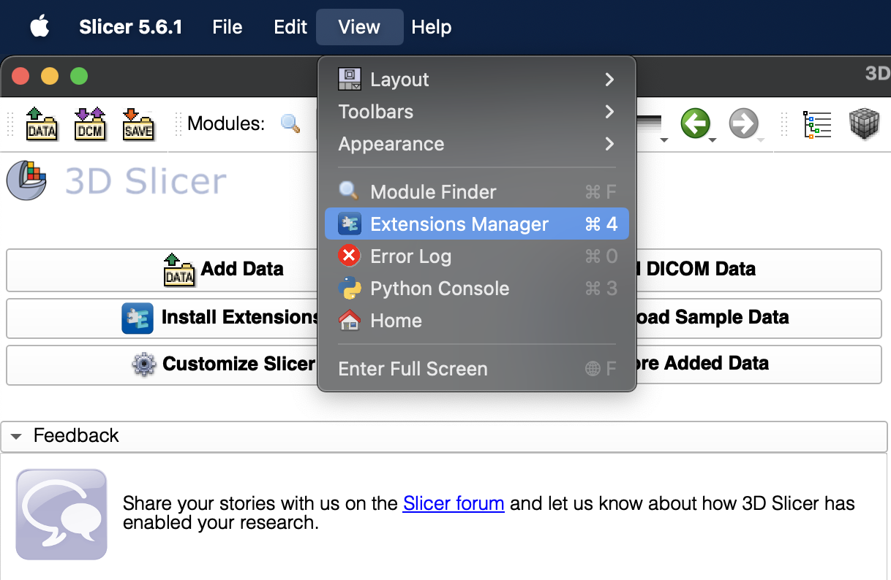
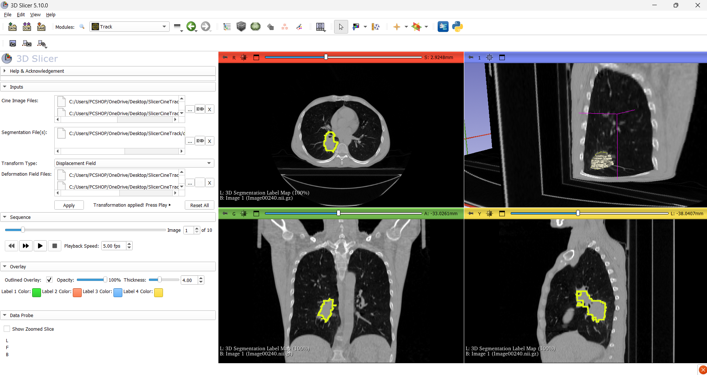
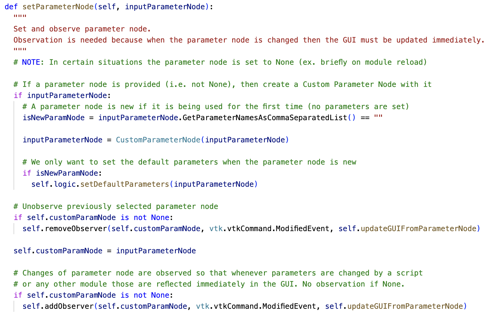

Validate your target-tracking through visual inspection.
SlicerCineTrack plays cine medical images frame-by-frame and overlays the tracked target at the exact position an algorithm predicted, turning raw tracking output into a clear visual check of its accuracy.

Builds on a dynamic platform
SlicerCineTrack is an extension of 3D Slicer, a free, open source software for target-tracking verification. SlicerCineTrack can be installed from the 3D Slicer Extension Manager on Windows, Mac, and Linux to leverage the advanced features of 3D Slicer.

Collates data for visual analysis
SlicerCineTrack accepts three unique inputs from the user: a set of cine images, a segmentation of the ROI, and transformation data. Users can use the built-in playback controls to go through the series of cine images with the segmentation overlaid on the current image at a position determined on the transform file.

SlicerCineTrack is open research
Our development and research work is public, including source code, data, manuals, presentations, etc. SlicerCineTrack is distributed under the BSD-style Slicer license allowing academic and commercial use without any restrictions. See our License site for further details.
Built for tracking verification
Everything you need to validate, tune, and compare tracking algorithms.
Frame-by-frame playback
Play or navigate through the sequence of the cine images you loaded with an adjustable frame rate.
Live segmentation overlay
The tracked target overlay locks to the reported coordinates on every frame.
Customizable overlay
Outline or filled, with adjustable color, thickness, and opacity.
Automatic orientation detection
Images are mapped into the correct sagittal, coronal, or axial view automatically.
Cross-platform
Installable from the official 3D Slicer extension catalog on Windows, Mac, and Linux.
Peer-reviewed & expert-evaluated
Published in Computer Methods and Programs in Biomedicine (2024).
Who it's for
Anyone who needs to trust a tracking result before it drives a decision.
Medical imaging researchers
Validate tracking pipelines before they inform downstream analysis.
Image-guided therapy specialists
Confirm a tracker is following the right target through an intervention.
Radiotherapy & medical physics researchers
Check tumor-tracking accuracy as a patient breathes during treatment.
Algorithm developers
Compare, tune, and refine tracking algorithms against ground truth.